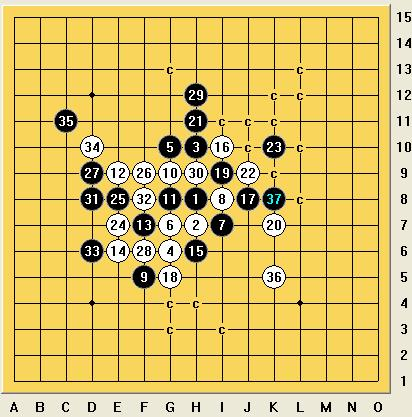

[学术讨论]瑞星（黑）绝地大反击
#1 [学术讨论]瑞星（黑）绝地大反击 作者：刀魂 发表时间：2009-3-26 10:37:07
=======上图对应的爱五子棋谱代码如下，以便你拆解：========
h8h7h10g6g10g7i7i8f5g9g8e9f7e6h6i10j8g5i9k7h11j9k10e7e8f9d9f6h12h9d8f8d6d10c11k5k9l10k8
======================================================
哈哈，今天下瑞星局，因为白36太 妙 啦 不信大家看看
但是 道高一尺 魔高一丈，黑棋 37 39 解的更漂亮
［ 茗弈小刀 于 2009-4-18 20:43:33 时花20金币送鲜花一朵］
［此帖子已被 茗弈小刀 在 2009-4-22 18:47:55 编辑过］
#2 Re:瑞星（黑）绝地大反击 作者：wd1988 发表时间：2009-3-26 13:27:09
一个必败的36。。。。不想评论。37根本不需要任何冲四，直接走就OK了
［本站用户 刀魂 于 2009-3-26 14:08:01 花5个金币送您鲜花一朵］
［ 茗弈小刀 于 2009-4-18 20:43:50 时花20金币送鲜花一朵］
#3 Re:瑞星（黑）绝地大反击 作者：刀魂 发表时间：2009-3-26 14:09:52
哈哈。。。你这个 做地毯的 软件很厉害哦。。。#4 Re:瑞星（黑）绝地大反击 作者：顽童 发表时间：2009-3-28 19:52:02
黑39手直接跳四F12然后I12形成活三一样杀.所以我认为黑的K8没有必要.#5 Re:瑞星（黑）绝地大反击 作者：顽童 发表时间：2009-3-29 15:01:54
直接I12双杀#6 Re:瑞星（黑）绝地大反击 作者：刀魂 发表时间：2009-3-29 15:47:55
恩 这局很有 代表性。。。#7 Re:瑞星（黑）绝地大反击 作者：星月传棋 发表时间：2009-4-18 19:30:46
不解必输：h8h7h10g6g10g7i7i8f5g9g8e9f7e6h6i10j8g5i9k7h11j9k10e7e8f9d9f6h12h9d8f8d6d10c11k5f12g11i12h4i3g3g4i5j6j5h5l5m5k6#8 Re:瑞星（黑）绝地大反击 作者：茗弈小刀 发表时间：2009-4-18 20:45:11
星月传棋请把局摆出来。
#9 Re:瑞星（黑）绝地大反击 作者：刀魂 发表时间：2009-4-18 22:17:52
7楼的谱：
=======上图对应的爱五子棋谱代码如下，以便你拆解：========
h8h7h10g6g10g7i7i8f5g9g8e9f7e6h6i10j8g5i9k7h11j9k10e7e8f9d9f6h12h9d8f8d6d10c11k5f12g11i12h4i3g3g4i5j6j5h5l5m5k6
======================================================
#10 Re:瑞星（黑）绝地大反击 作者：茗弈总监 发表时间：2009-4-20 16:20:18
完美的杀,就这么简单啊!跟做题似的!
#11 Re:瑞星（黑）绝地大反击 作者：刀魂 发表时间：2009-4-20 16:23:56
 ，，，搞得这么复杂。。。真是的
，，，搞得这么复杂。。。真是的
#12 Re:[学术讨论]瑞星（黑）绝地大反击 作者：剑魔令狐冲 发表时间：2009-9-24 13:39:22
弟弟现在怎么这样啊 老是发些 自己败的谱 结果别人走起更败........这样误导别人可不好啊
老是发些 自己败的谱 结果别人走起更败........这样误导别人可不好啊